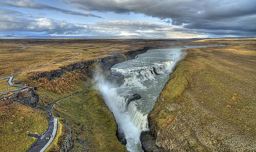

Upplisingar
Gullfoss er einn þekktasti og fegursti foss Íslands og er hluti af hinum vinsæla Gullna hring. Fossinn er staðsettur í Haukadal í Árnessýslu við Hvítá, um 116 km frá Reykjavík. Hann er stigskiptur foss sem fellur samtals um 32 metra niður í djúpt gljúfur, þar sem efri hlutinn er 11 metrar og neðri hlutinn 21 metri. Vatnið er jökulsá sem á upptök sín í Langjökli og er meðalrennsli hennar um 109 til 140 cubic metrar á sekúndu, en rennslið eykst til muna á sumrin. Snemma á 20. öld stóð til að virkja Gullfoss til rafmagnsframleiðslu, en Sigríður Tómasdóttir í Brattholti barðist af hörku gegn þeim áformum og bjargaði fossinum. Hún er oft talin fyrsti umhverfissinni Íslands. Svæðið er opið allt árið um kring án aðgangseyris og boðið er upp á góða útsýnispalla.
